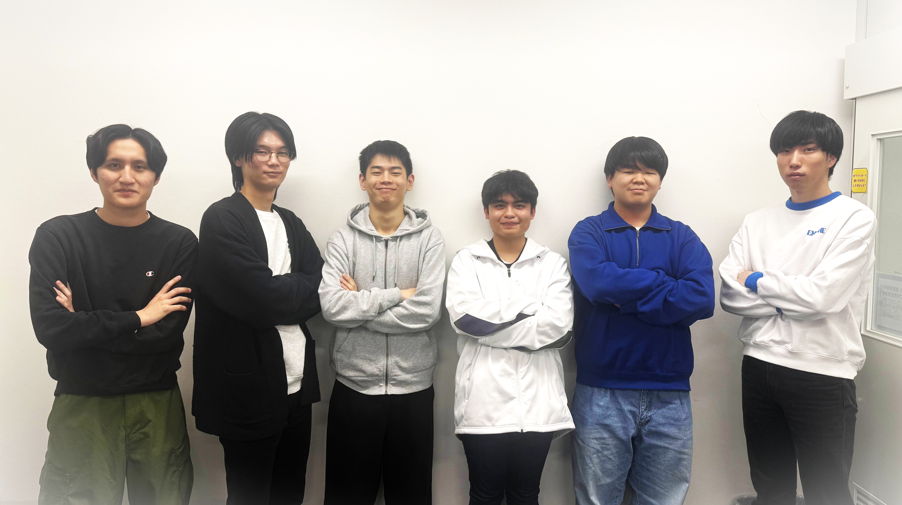

「入学してから１年間！成長した成果を見に来てください」
１年担任 シュウ先生
「学生生活の集大成を展示します！学生制作のグッズ販売もしますのでお楽しみに」
２年担任 髙根沢先生
×

修了展キービジュアル制作
Pen-Name : 小池じぇい
Pen-Name : 小池じぇい


IT College
Web Project 2025 - 2026
このページは、総合学園ヒューマンアカデミー大宮校 ITカレッジの6人チームで制作しました。
企画・デザイン・コーディング・テスト・公開まで、Webサイト制作の一連の流れを自分たちの手で完結させることを目標に進めてきました。
レイアウト調整やスマホ対応など、何度も試行錯誤を重ね、今の形にたどり着きました。
最後までご覧いただきありがとうございます
ぜひ当日会場までお越しくださいませ！